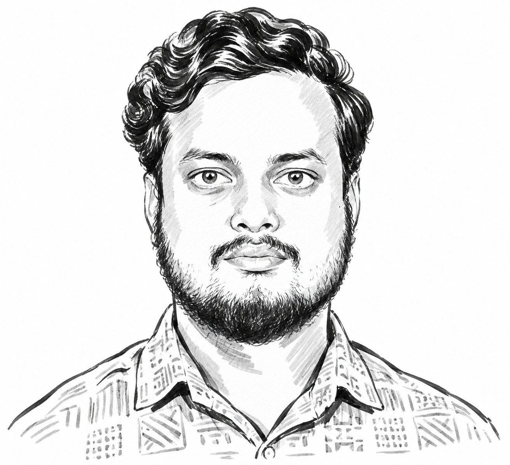
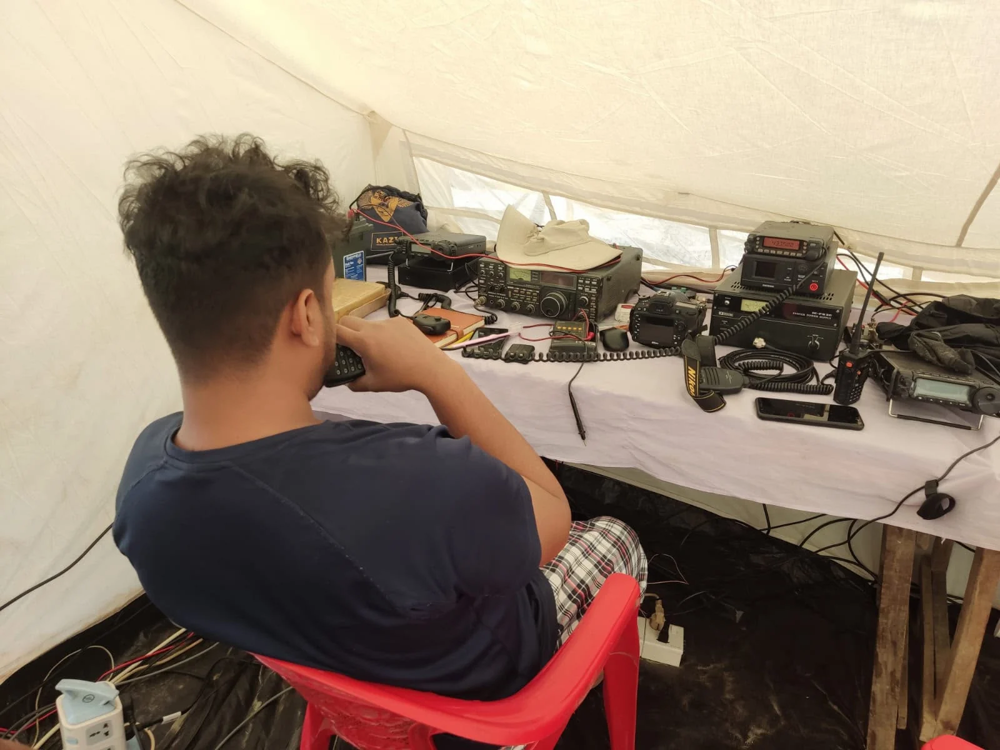

Local time
--:--
Dhaka · Bangladesh Standard Time
Loading date
LIVE
Dr Deepta Majumder is a physician and public health researcher working across infectious diseases, harm reduction, cardiovascular health, cancer prevention and health inequalities in Bangladesh
A layered view of the research, publications, projects and the AI assistant behind this portfolio
Time weather daylight sunrise and lunar conditions presented as a compact colourful glass interface

Medical training and clinical work provided the foundation for understanding how disease, treatment and health systems affect patients in practice
Harm-reduction work with people who use drugs and people living with HIV exposed the importance of stigma, prevention, access and continuity of care
My research experience spans protocol development, data collection, data cleaning, coding, statistical analysis, literature synthesis and scientific writing
The goal is practical: strengthen programmes, inform policy and improve health outcomes in resource-constrained settings
The portfolio reflects the areas represented across my clinical, programme and research experience
HIV prevention and treatment, hepatitis B/C, TB, co-infection management and health services for key populations
Opioid substitution therapy, overdose management, safer injecting, stigma reduction and treatment engagement
Heart failure, pulmonary hypertension, iron deficiency, lipid target achievement and cardiovascular outcomes
HPV vaccination, vaccine hesitancy and public-health communication around cancer prevention
Dietary diversity, nutritional status and health outcomes among vulnerable populations
Access, service delivery, community engagement and translation of evidence into practical public-health action
Selected ongoing and completed research projects spanning disaster health gender based violence immunisation mental health climate related health and emergency care
This study examines women’s experiences of gender based violence in flood affected communities in Bangladesh and explores how displacement and disruption to essential services may shape women’s safety and their ability to seek support The study aims to inform disaster preparedness and response efforts that improve protection and access to support for survivors
This project examines how cyclones disrupt access to essential medicines and routine care for people living with chronic conditions such as hypertension diabetes and asthma in coastal Bangladesh The study explores how flooding displacement transport barriers and disruptions to local health services affect patients’ ability to refill prescriptions and attend follow up visits The project aims to inform cyclone preparedness and recovery plans that help patients continue treatment during and after emergencies
This study assessed what parents in Dhaka’s urban slums knew about routine childhood immunisation and how they felt about vaccinating their children The study aimed to identify gaps in parents’ understanding of recommended vaccines and vaccination schedules as well as concerns that could influence their decisions to inform communication with families in these communities
This study characterised patterns of deliberate self harm among adolescents and examined how those patterns were associated with suicidal ideation The study aimed to inform clinical assessment and guide timely mental health support for adolescents who self harm
This study aimed to estimate the prevalence of climate anxiety and psychological distress among medical students in Bangladesh identify factors associated with each outcome and examine the relationship between the two The study was designed to inform student mental health support and guide how medical colleges address climate related concerns in student wellbeing programmes
This cross sectional study aims to estimate the prevalence of post traumatic stress disorder among students in Dhaka following Bangladesh’s July 2024 mass revolt and examine associated demographic social and psychological factors The study aims to inform mental health screening and support for students affected by political unrest
This retrospective study examines measles vaccination status and potential risk factors among children admitted with measles to a designated tertiary care hospital in Bangladesh during an outbreak The study aims to document gaps in vaccination among admitted children and inform immunisation outreach and outbreak response
A cross-sectional study examining clinical and demographic characteristics with KAP analysis and molecular characterisation of dengue virus strains Responsibilities included protocol writing, data collection, RNA-to-cDNA conversion and amplification for molecular analysis
A tertiary-hospital study assessing iron deficiency and associated factors I contributed to statistical analysis using SPSS and discussion writing under supervision
An observational study using the DN4 questionnaire and medical records to assess neuropathic symptoms and clinical and biochemical risk factors Responsibilities included participant enrolment, data collection, clinical evaluation, statistical analysis, literature review and discussion writing
Programme implementation across CDIC settings, including HIV/STI/HBV/HCV/TB screening, OST, needle-syringe exchange, condom distribution, overdose management, peer outreach, staff training and coordination with government, law enforcement and NGOs
GFPWID, funded by The Global Fund Supervision of a 19-person team, CDIC operations, HIV/OST training, outreach monitoring, service quality, TB/HIV/STI/HBV/HCV testing, harm-reduction implementation and programme reporting
GFPWID, funded by The Global Fund Capacity building, HIV/OST services, peer outreach monitoring, enrolment of 35 people into OST, case management and community prevention
GFPWID, funded by The Global Fund Peer meetings, health education, family orientation, stigma reduction, safer injecting and clinical management of HIV, STIs, TB and injection-related problems
Protocol writing, conceptualisation, data cleansing, coding, analysis, data visualisation and scientific presentation in cardiovascular research
Clinical service management, duty-roster coordination, infection-prevention quality reviews, staff training, CME activities and resource allocation
Basic medical sciences, biomedical sciences and public health, and clinical medicine
Epidemiology, biostatistics, research methodology, communicable and non-communicable disease control, health policy, management, informatics, economics and public health nutrition
Comparative study of clinical, demographic and biochemical features in heart-failure patients with reduced ejection fraction from southern and northern zones of Bangladesh
Developed an implementation and evaluation framework to help Bangladeshi newcomers navigate healthcare, education, language, banking, housing and digital services through multilingual online and community-based orientation, with pre/post assessment of knowledge and confidence
The CV documents sustained involvement in public-health advocacy, disaster communication, volunteer response and community education
Public-health advocacy, healthcare access and patient rights; strategic initiatives, stakeholder engagement, awareness campaigns and cross-organisational training
Emergency HF/VHF/UHF communication during three crisis volunteer missions; volunteer training, antenna seminars and STEM outreach including schoolchildren's communication with the International Space Station
Translated WHO guidance into accessible public-health materials, supported Bangladesh-adapted COVID-19 guidance, supervised volunteer communication work and conducted social-media fact checking
Coordinated emergency medical and relief support for more than 300 affected people, including basic medical care, water-purification tablets and reproductive-health-related supplies
Volunteering has been a continuous part of my work — from public-health advocacy and community education to disaster response emergency communication and support for underserved communities
Public-health advocacy and community service focused on healthcare access patient rights awareness and practical support for underserved communities
Contributed to the Newcomer Settlement Orientation Program developing practical approaches to help Bangladeshi newcomers navigate healthcare education language banking housing and digital services
Volunteer amateur-radio activities supporting emergency communication training field operations and disaster response when conventional communication networks are disrupted
Formed a team of doctors students and volunteers to provide urgent medical care relief support and essential supplies to flood-affected communities
Led communication work supporting awareness campaigns against misinformation through short films posters fact-checking and accessible public-health messaging
Helped establish an emergency amateur-radio communication system and medical camp with the Bangladesh Army when local communication networks failed
Participated in medical and relief camps refugee-community health activities health education reproductive-health awareness and support for vulnerable communities
Research on the clinico-demographic profile of dengue patients and molecular characterisation of the virus Ref: BMRC/Revenue/Research Grant/2026/646(01-168)
Co-investigator on a clinico-etiological study of pulmonary hypertension at Bangabandhu Sheikh Mujib Medical University
Merit scholarships for outstanding SSC and HSC results, including tuition support and monthly stipends
DOI: DOI
DOI: DOI
DOI: DOI
DOI: DOI
DOI: DOI
Published July 2026
DOI: DOI
Association Between Dietary Diversity and Cardiovascular Disease Risk Assessment Among Rohingya Refugees in Bangladesh; Impact of Nutritional Status on Outcomes of Patients with Acute Coronary Syndrome; and a comparative study of clinical, demographic and biochemical features in heart failure with reduced ejection fraction
Association of preoperative N-terminal pro B-type natriuretic peptide and cardiorenal syndrome following off-pump coronary artery bypass grafting surgery
Accepted for poster presentation at the APHA 2026 Annual Meeting and Expo in San Antonio, Texas
My amateur radio journey connects electronics communication field problem solving and humanitarian service — a technical pursuit that became another way to serve communities when conventional communication systems fail

Amateur radio combines technical experimentation communication and public service when conventional networks are unavailable
The Amateur Radio Society of Bangladesh profile highlights my work as S21HK and describes my involvement in emergency communication volunteer training technical outreach and youth engagement
Since 2017 I have been a licensed amateur radio operator and since 2019 an active contributor to ARSB with experience across HF VHF and UHF field communication
Through ARSB and ham radio activities I have supported crisis response communication assisted rescue and relief coordination and trained volunteers in effective field communication
Read the ARSB feature ↗When rapidly rising floodwaters isolated communities in Feni and disrupted electricity mobile networks and food supply systems our amateur radio network became an emergency communication link for rescue teams
The response included establishing emergency communication stations linking Dhaka and Feni using portable and base radios antennas and a Yagi antenna for longer-distance communication The team worked with Bangladesh Scouts Red Crescent volunteers doctors engineers university students and the Bangladesh Army to maintain communication between field teams and the Feni control room
Read the QST feature ↗Session: Breakthrough Research–5 · Topic: Human Papillomavirus Vaccine Hesitancy Among Female University Students in Bangladesh: The Role of Knowledge Trust and Academic Background · Time: 5:00 PM–6:30 PM · Duration: 8 minutes · Venue: Hall-3 Radisson Blu Water Garden Hotel Dhaka Bangladesh